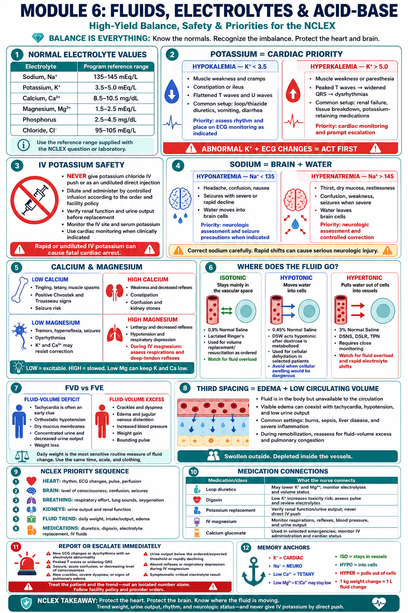

1 · Module Overview
Why this module matters: Electrolyte imbalances are behind some of the most dangerous NCLEX scenarios — cardiac arrest from hyperkalemia, seizures from hyponatremia, respiratory failure from hypomagnesemia. The NCLEX tests whether you can recognize these imbalances early and know which ones are immediately life-threatening.
🎯 What the NCLEX Expects
- Select the correct IV fluid type (isotonic/hypotonic/hypertonic) for each situation
- Recognize signs of each electrolyte imbalance
- Know which imbalances cause cardiac arrhythmias (priority)
- Identify Chvostek's and Trousseau's signs (hypocalcemia)
- Know foods high in each electrolyte for teaching
- Prioritize the most dangerous imbalance when multiple are present
- Understand third spacing and when to suspect it
🔑 The Golden Rule
2 · Learning Objectives
- 1Select the correct IV fluid (isotonic, hypotonic, or hypertonic) based on the clinical scenario.
- 2Identify signs and symptoms of hyponatremia and hypernatremia and the priority nursing actions.
- 3Recognize hypokalemia and hyperkalemia by ECG changes, symptoms, and causes — and act accordingly.
- 4Differentiate hypocalcemia from hypercalcemia including Chvostek's and Trousseau's signs.
- 5Identify the signs of hypomagnesemia and its relationship to other electrolyte imbalances.
- 6Distinguish fluid volume deficit from fluid volume excess and identify priority assessments.
- 7Explain third-spacing and identify clinical situations where it occurs.
- 8Apply the electrolyte priority framework to NCLEX-style prioritization questions.
3 · The Big Picture
IV Fluids
Isotonic stays in vessels. Hypotonic moves into cells. Hypertonic pulls fluid out of cells.
Sodium
Na controls water. Low Na → brain swells (seizures). High Na → brain shrinks (confusion). Correct SLOWLY.
Potassium
K controls cardiac rhythm. Always the #1 priority electrolyte. Never IV push. Correct hypo before giving diuretics.
Calcium
Low Ca → hyperexcitability (tetany, Chvostek's, Trousseau's). High Ca → everything slows (stones, groans, moans).
Magnesium
Low Mg → hard to correct K & Ca. Check Mg when K stays low. Low Mg → seizures, arrhythmias.
Fluid Balance
FVD → tachycardia first. FVE → crackles, edema, weight gain. Third spacing = fluid trapped where it can't work.
4 · High-Yield Graphic

🧪 IV Fluid Quick Reference
ISOTONIC (Same as blood)
Examples: 0.9% NS, Lactated Ringer's, D5W (acts isotonic in bag, becomes hypotonic once metabolized)
Use: Fluid replacement, dehydration, blood loss, pre/post-op
Effect: Stays in the vascular space — expands blood volume
⚠️ Caution in HF, renal failure — can cause fluid overload
HYPOTONIC (Less than blood)
Examples: 0.45% NS (half normal saline), 0.33% NS
Use: Cellular dehydration, hypernatremia, DKA (after initial fluid resuscitation)
Effect: Shifts fluid INTO cells — rehydrates cells
⚠️ Never in head injury, burns, or shock — can cause cerebral edema
HYPERTONIC (More than blood)
Examples: 3% NS, D10W, D5 0.9%NS, D5LR, TPN
Use: Severe hyponatremia, cerebral edema, severe burns (later phase)
Effect: Pulls fluid OUT of cells into vessels — shrinks cells
⚠️ Give SLOWLY via pump, central line preferred — monitor for fluid overload
Na⁺: 135–145 mEq/L | K⁺: 3.5–5.0 mEq/L | Ca²⁺: 8.5–10.5 mg/dL | Mg²⁺: 1.5–2.5 mEq/L | Phosphorus: 2.5–4.5 mg/dL | Cl⁻: 95–105 mEq/L
5 · Deep Dive Lessons
| Fluid | Type | Use For | Cautions |
|---|---|---|---|
| 0.9% Normal Saline | Isotonic | Dehydration, blood loss, pre-op, hyponatremia with FVD, medication diluent | Fluid overload, hyperchloremic acidosis with large volumes |
| Lactated Ringer's (LR) | Isotonic | Burns, trauma, surgery — most physiologic isotonic fluid | Avoid in liver disease (can't metabolize lactate), hyperkalemia |
| D5W | Isotonic in bag → Hypotonic in body | Free water replacement, hypernatremia, medication diluent | NOT for resuscitation — acts hypotonic once dextrose metabolized; causes dilutional hyponatremia with large volumes |
| 0.45% NS (½NS) | Hypotonic | Hypernatremia, cellular dehydration, DKA maintenance | Never in shock, ICP, burns, head injury — causes cerebral edema |
| 3% NS | Hypertonic | Severe symptomatic hyponatremia (seizures), SIADH | Central line preferred; monitor Na q2-4h; give SLOWLY — rapid correction → ODS |
| D5 0.9%NS / D5LR | Hypertonic | Post-op fluid + caloric support | Monitor glucose, fluid overload |
| TPN | Hypertonic | Cannot take oral nutrition; GI rest needed | Central line ONLY; monitor glucose Q4-6h; refeeding syndrome risk |
Reason: fluid shifts into cells → worsens edema/hypotension
| Feature | Fluid Volume Deficit (FVD) | Fluid Volume Excess (FVE) |
|---|---|---|
| Also Called | Hypovolemia, dehydration | Hypervolemia, fluid overload |
| Causes | Vomiting, diarrhea, burns, hemorrhage, excessive sweating, third spacing, NPO without IV fluids | Heart failure, renal failure, excess IV fluids, cirrhosis, SIADH, excess Na intake |
| First Sign | Tachycardia (compensatory) | Weight gain (1 kg = ~1 L fluid) |
| Vital Signs | ↑HR, ↓BP (orthostatic first), ↑RR | ↑BP, ↑HR (if severe), bounding pulse |
| Assessment | Dry mucous membranes, ↓skin turgor, sunken eyes, flat neck veins, ↓UO (<30 mL/hr), dark urine, ↑BUN/Cr | Crackles, pitting edema, JVD, S3 heart sound, dyspnea, weight gain, ↑UO if kidneys compensating |
| Lab Changes | ↑Hct (hemoconcentration), ↑BUN, ↑specific gravity (>1.030) | ↓Hct (hemodilution), ↓BUN, ↓specific gravity (<1.010) |
| Treatment | IV fluids (isotonic — NS or LR), oral fluids if able, identify and treat cause | Diuretics, fluid restriction, sodium restriction, semi-Fowler's position, daily weights |
| Nursing Priority | Monitor HR and BP, UO hourly if severe, daily weights, I&O | Daily weights (same time, same scale, same clothes), monitor lung sounds, I&O, edema assessment |
🫧 What Is Third Spacing?
Third spacing occurs when fluid shifts from the vascular space into a space where it can't be used for circulation — such as the interstitium, peritoneal cavity, or pleural space. The patient looks like they have enough total body fluid but acts like they're hypovolemic because the fluid is trapped and non-functional.
Common Causes:
- Burns (massive capillary leak)
- Peritonitis, bowel obstruction
- Major abdominal surgery
- Sepsis (capillary leak syndrome)
- Pancreatitis
- Liver failure / ascites
- Nephrotic syndrome
Signs (Look Like FVD):
- ↑HR, ↓BP (despite visible edema)
- ↓UO (fluid not in circulation)
- Weight gain (fluid is in body, just trapped)
- Edema, ascites, pleural effusion
- Normal or low BUN early (dilution effect)
⚡ Electrolyte Priority Order (NCLEX)
- Potassium (K⁺) — Cardiac arrhythmia risk. ALWAYS assess cardiac rhythm first when K⁺ is abnormal.
- Sodium (Na⁺) — Neurological risk (seizures, confusion, brain herniation). Correct slowly in both directions.
- Calcium (Ca²⁺) — Neuromuscular risk (tetany, laryngospasm, seizures). Check post-thyroid surgery patients.
- Magnesium (Mg²⁺) — Affects ability to correct K and Ca. Check when K stays low despite replacement.
- Fluid status — FVD vs. FVE vs. third spacing. Tachycardia is first sign of FVD.
K⁺ >6.0 or <2.5 (cardiac emergency)
Na⁺ <120 or >160 (seizure/coma risk)
Ca²⁺ <7.0 (laryngospasm risk)
Peaked T waves on ECG (hyperkalemia)
UO <30 mL/hr × 2 hours (kidney perfusion)
Positive Trousseau's or Chvostek's (hypoCa)
Patient A: K⁺ = 6.2, peaked T waves on monitor
Patient B: Na⁺ = 128, mild confusion
Patient C: Ca²⁺ = 7.8, mild tingling
Patient D: gaining 2 lb/day, mild ankle edema
→ Patient A: hyperkalemia with ECG changes = cardiac emergency, assess immediately.
6 · Memory Tricks
Hypocalcemia: "CT Scan"
Chvostek's (tap Cheek → twitch) · Trousseau's (inflate cuff → carpal Spasm). Trousseau's is more specific — use it to confirm hypocalcemia.
Hypercalcemia: "Bones, Groans, Psychic Moans, Stones"
Bone pain · Constipation/N&V (groans) · Confusion/depression (psychic moans) · Kidney stones. Everything slows down with too much calcium.
Hypokalemia: "Flat as a Pancake"
Flat T waves, U waves on ECG. Muscle weakness feels like being flat. Remember: diuretics waste K⁺ — always replace it.
Hyperkalemia: "Peaked Like a Mountain"
Peaked T waves = first ECG change = DANGER. Think peaked mountain = tall dangerous K. This progresses to V-fib fast.
IV Fluid Tonicity
ISOtonic = stays in the ISOlated vessel. HYPOtonic = goes INTO cells (HYPOdermic = into). HYPERtonic = pulls fluid OUT (HYPER = overpower the cell).
Low Mg = Low Everything
When K stays low despite replacement, check Mg. When Ca stays low, check Mg. Hypomagnesemia blocks the correction of both K and Ca — fix Mg first.
Sodium Correction: SLOW DOWN
Both hyponatremia and hypernatremia must be corrected SLOWLY. Too fast either direction = brain disaster (ODS or cerebral edema). "Slow and steady wins the sodium race."
Third Spacing = Edema + Dehydration
Patient is swollen but dehydrated at the same time — the fluid is in the wrong compartment. Weight goes UP (fluid in body), BP goes DOWN (fluid not in vessels).
7 · NCLEX Pearls
- ✅ Potassium is always the #1 priority electrolyte — both hypo and hyperkalemia cause life-threatening cardiac arrhythmias.
- ✅ Never give IV potassium as a push or bolus — always dilute, always via pump, max 10 mEq/hr peripheral.
- ✅ Peaked T waves on ECG = hyperkalemia until proven otherwise — notify provider immediately.
- ✅ Hypokalemia + digoxin = double danger — low K increases digoxin toxicity risk. Check K before every digoxin dose.
- ✅ Correct sodium slowly in both directions — max 8–12 mEq/L per 24 hours to prevent osmotic demyelination or cerebral edema.
- ✅ Chvostek's = tap cheek → facial twitch. Trousseau's = inflate BP cuff → carpal spasm. Both = hypocalcemia.
- ✅ Post-thyroid/parathyroid surgery: keep IV calcium gluconate at bedside — hypocalcemia risk is high.
- ✅ When K stays low despite replacement, check magnesium — hypomagnesemia prevents K correction.
- ✅ Daily weight is the most accurate way to monitor fluid status — 1 kg = 1 L of fluid.
- ✅ Tachycardia is the FIRST sign of fluid volume deficit — precedes hypotension.
- ✅ D5W acts isotonic in the bag but becomes hypotonic in the body — never use for resuscitation.
- ✅ Before giving IV magnesium: check DTRs, RR ≥12, UO ≥25 mL/hr — absent DTRs = hold and call.
8 · NCLEX Traps
- 🚫 Trap: Giving IV K+ by bolus or fast push. Always dilute and use a pump. IV push = cardiac arrest.
- 🚫 Trap: Using D5W for fluid resuscitation. It's not effective — it becomes free water once metabolized.
- 🚫 Trap: Giving hypotonic fluids to a patient in shock or with head injury. Causes cerebral edema and worsens hypotension.
- 🚫 Trap: Rapidly correcting hyponatremia with 3% NS. Causes osmotic demyelination syndrome — correct slowly, max 8–12 mEq/L/24h.
- 🚫 Trap: Missing hyperkalemia because the patient has edema (looks like FVE). Renal failure patients have both — check K+ on all renal patients.
- 🚫 Trap: Treating third-spacing edema like regular FVE by restricting fluids. The vascular space is depleted — the patient needs IV fluids, not restriction.
- 🚫 Trap: Giving K+ to a patient with renal failure without checking urine output. Renal failure = can't excrete K = risk of hyperkalemia.
- 🚫 Trap: Forgetting to give calcium gluconate before IV magnesium in a patient at risk for toxicity. Calcium gluconate is the antidote for Mg toxicity.
- 🚫 Trap: Assuming Lactated Ringer's is safe in all patients. It contains potassium — avoid in hyperkalemia. It contains lactate — avoid in liver failure.
- 🚫 Trap: Thinking a patient with third spacing who is gaining weight is fluid overloaded and needs diuretics. Weight gain = trapped fluid, not circulating fluid — diuretics could worsen the hypovolemia.
9 · Clinical Connections
⚡ Renal Failure Patient
Can't excrete K, Na, or water → hyperkalemia + fluid overload common. Check K every shift. Monitor ECG. Fluid restrict. Avoid K-containing fluids (LR). Dialysis removes what kidneys can't.
💊 Loop Diuretic Patient (Furosemide)
Wastes K, Mg, Ca, Na. Check K before every dose. Supplement K and Mg as ordered. Monitor for muscle weakness, arrhythmias. Weigh daily — 1–2 kg/day loss is goal in HF.
🔥 Burn Patient
Acute phase: massive third spacing → hypovolemia despite swelling. Aggressive IV fluid resuscitation (LR preferred). Monitor UO 30–50 mL/hr. Recovery phase: fluid remobilizes → watch for FVE and pulmonary edema.
🦋 Post-Thyroidectomy
High risk for hypocalcemia (parathyroids removed or damaged). Assess Chvostek's and Trousseau's Q4-8h for 24–48h. Keep calcium gluconate at bedside. Teach signs of tetany before discharge.
🩺 SIADH Patient
Syndrome of inappropriate ADH → water retention → dilutional hyponatremia. Hallmark: Na low, urine concentrated. Treatment: fluid restriction (not saline — worsens it). Demeclocycline or vasopressin antagonists for chronic cases.
🍺 Alcoholic Patient
Classic hypomagnesemia (poor intake + alcohol wastes Mg). May also have hypokalemia, hypocalcemia, hypophosphatemia. Always check Mg on admission. Seizure risk from electrolyte imbalances + alcohol withdrawal — monitor closely.
10 · Priority Framework
💧 Fluids & Electrolytes NCLEX Priority Sequence
- Is the heart at risk? Check K⁺ first. ECG changes (peaked T, widened QRS)? Call provider, continuous monitoring.
- Is the brain at risk? Sodium abnormal? Assess neuro status — confusion, seizure precautions if Na <125.
- Is neuromuscular function at risk? Check Ca²⁺ — tetany, Trousseau's, Chvostek's?
- Is Mg blocking correction? K or Ca not correcting with replacement? Check and replace Mg first.
- Is fluid status addressed? FVD → isotonic IV fluids, monitor UO. FVE → diuretics, fluid restriction, daily weights.
11 · Medication Focus
Potassium Chloride (KCl)
Magnesium Sulfate (IV)
Calcium Gluconate (IV)
Sodium Polystyrene (Kayexalate)
12 · Practice Questions
13 · NGN Case Studies
14 · Remediation Worksheet
1. IV Fluid Matching
Write the correct fluid type (isotonic/hypotonic/hypertonic) for each scenario:
Patient in hypovolemic shock, BP 80/50:
Patient with hypernatremia, Na⁺ 158:
Patient with severe symptomatic hyponatremia, Na⁺ 115, seizures:
2. Electrolyte Imbalances
For each, write: direction (high/low), 2 signs, and priority action:
Hyperkalemia:
Hypocalcemia:
Hypomagnesemia:
3. KCl IV Safety Rules
List 4 things you must do before/during IV potassium administration:
4. Chvostek's vs. Trousseau's
How do you perform each test and what does a positive result look like?